Introduction
Active listening means listening becomes the primary activity: putting on some music and dedicating your full attention to it.
Not everyone listens to music like this. Not everyone wants to listen to music like this. However, for those who do, it is a rewarding experience.
Active listening opens up my music preferences to
discover new sounds. Overtime, I can
better articulate why I enjoy listening to the music I like.
Problem
Like many mindful practices, active listening requires focus. Listeners must be aware of their emotional response to the song and pay attention to the individual musical elements of the song. Ultimately, the users seeks to discover a subjective and articulate response to the music.
Establish listening intentions

Users typically have specific reasons to actively listen to an album. Establishing intentions reminds the user of their intrinsic motivations before starting a session.
Respond to emotional prompts

Emotional prompts remind the user to remain mindful of how the music makes them feel. Affective responses to music are typically the first step to active listening.
Dig deeper by adding musical elements to the interface

The visualization of musical elements on the interface makes them more accessible to the user, providing tools towards deeper analysis of the music.
Articulate and remember your thoughts with annotations
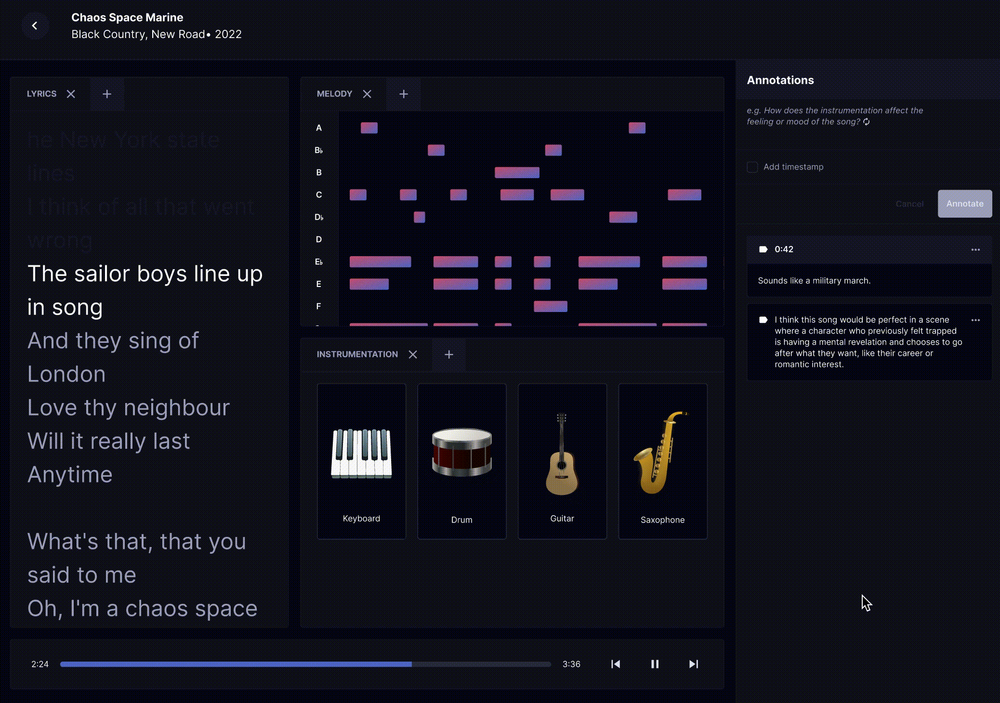
Finally, annotations allow users to respond to the musical elements. Written responses encourage deliberation and reflection, which help users articulate their opinions.
Research insights
I discovered that there are layers to active listening.
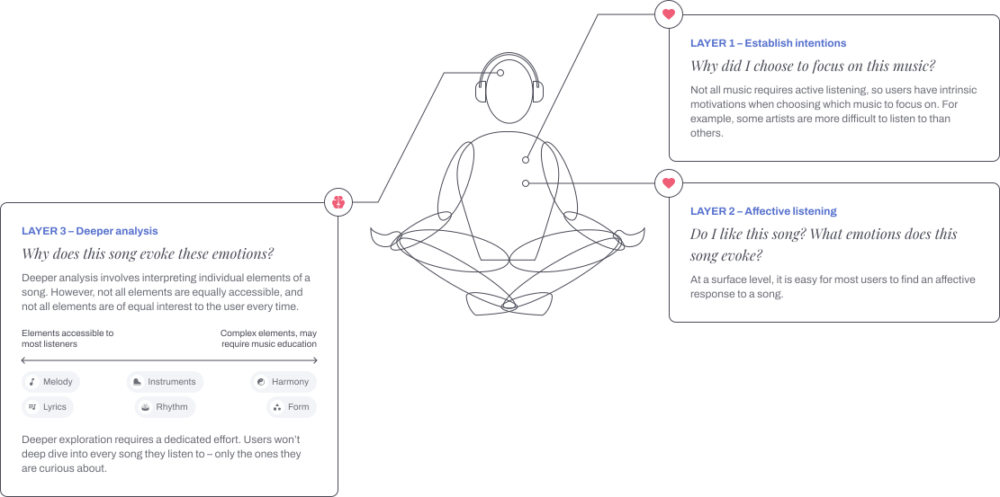
Designing a user flow
I designed a user flow that takes the user through the layers of active listening. First, the flow establishes intentions and prioritizes emotional introspection. Deeper analysis is facilitated, but if and how it occurs is left up to the user.
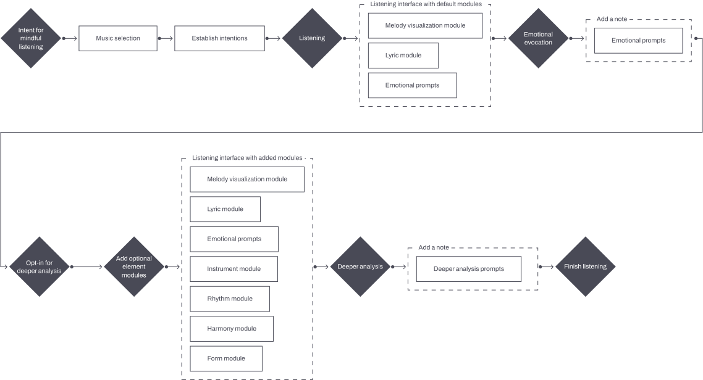
Iterations
Dashboard design
Users commented on early wireframes that they expect to see the album somewhere on the dashboard. When users start an active listening session, it is usually because their primary motivation is to understand the full album, not its individual songs.
Individual songs are used to understand the full album. In later iterations, I added an album tracklist. This also allows users to see the order tracks are listed in the album, which is also important for analysis.
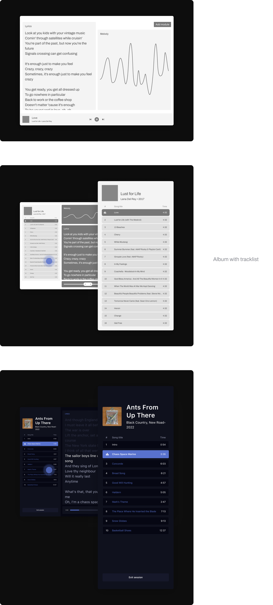
Iterations
Adding new elements flow
Users commented on early wireframes that they were satisfied with the simplicity of the dashboard, allowing them to focus on their affective response to the music rather than overanalyzing individual elements. They were disappointed that adding new elements would create additional clutter.
However, adding new elements would provide users with tools for deeper analysis if they chose to. In later iterations, I decided that adding new elements would open a second screen for deeper analysis.
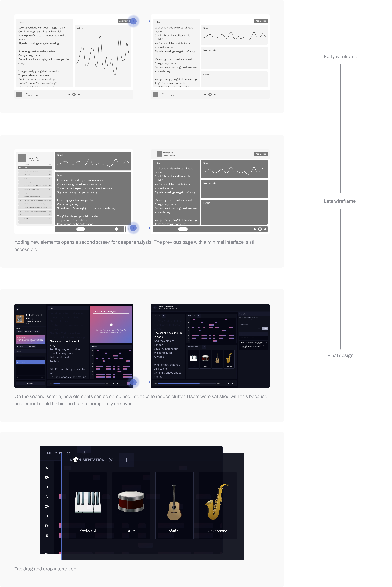
Iterations
Annotations
I explored two options for the user to add annotations. I had to decide whether annotations should be timestamped or not.


Users felt like option 2 would restrict their thoughts to specific points in time, but they felt that timestamps would be useful during a full analysis when thoughts may be related to specific details in the song.
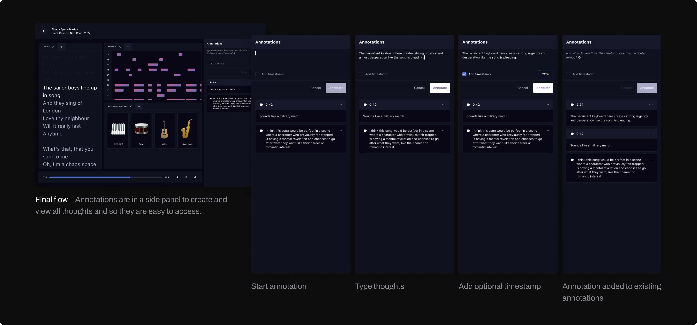
Design system
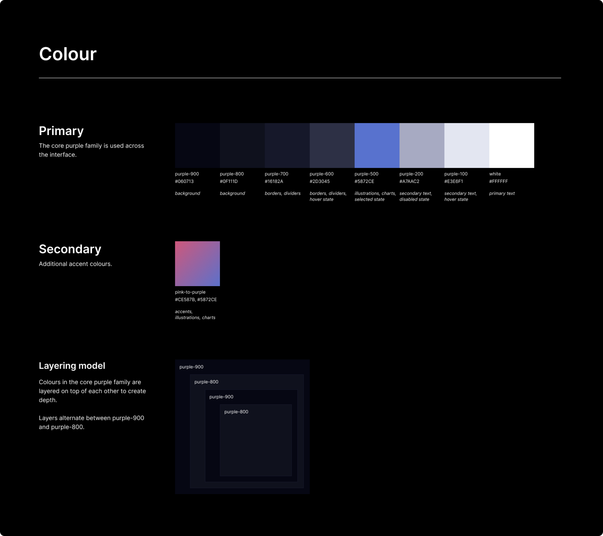
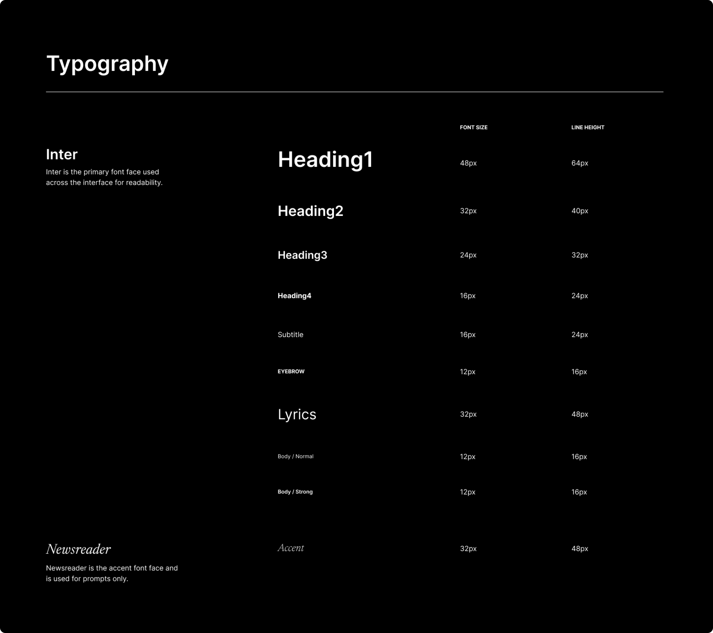
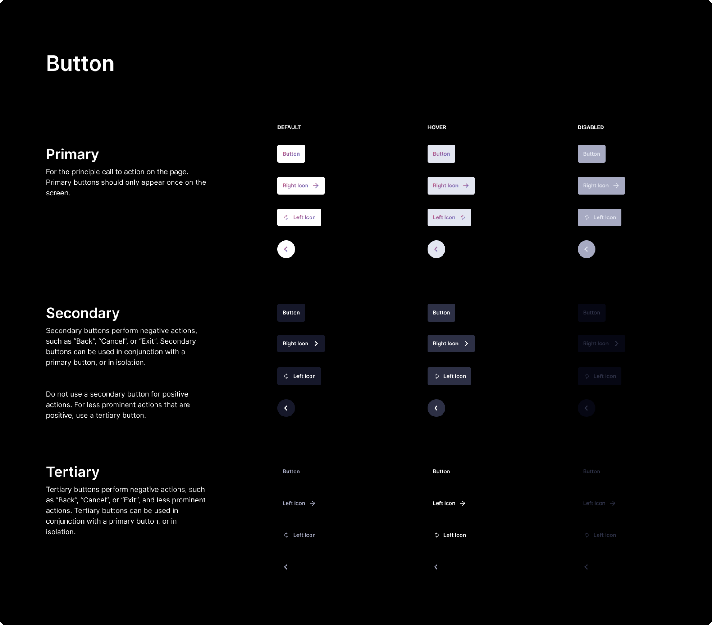
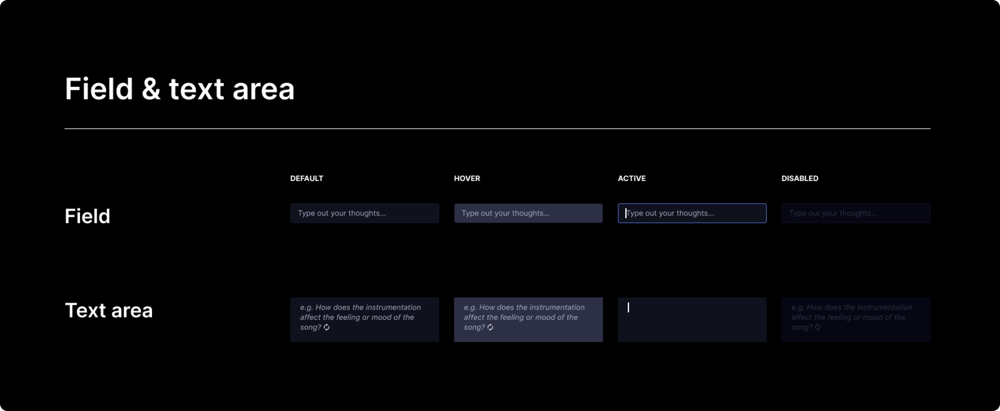
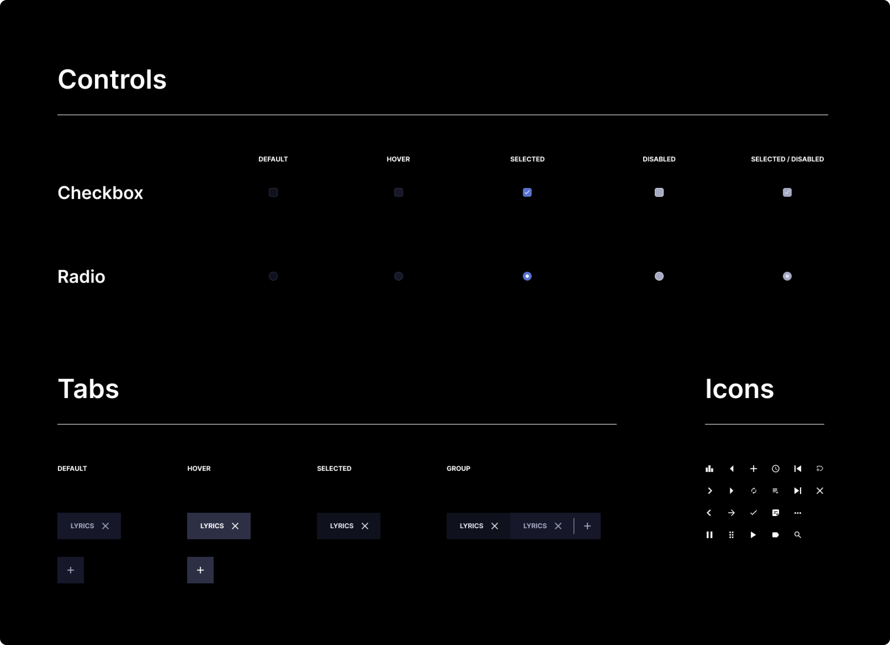